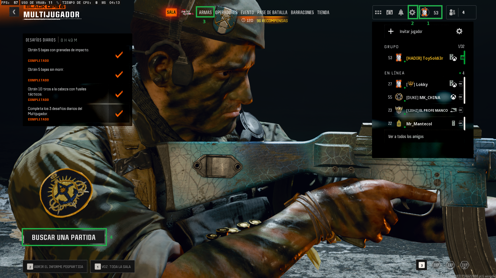

Sala Previa
En esta seccion te daremos una explicacion rapida sobre el menu de la sala prepartida y otros detalles del multijugador.
En la siguiente imagen veremos:
- A la izquierda los desafios diarios.
- A la derecha los amigos conectados.
- En las pestañas superiores tenemos operadores, eventos, pase de batalla, barracones y tienda.
- Abajo a la izquierda el informe pospartida para revisar las estadisticas de la ultima partida jugada.
- Y abajo a la derecha podremos activar las fichas de doble puntos de experiencia.
Pero vamos a centrarnos en:
